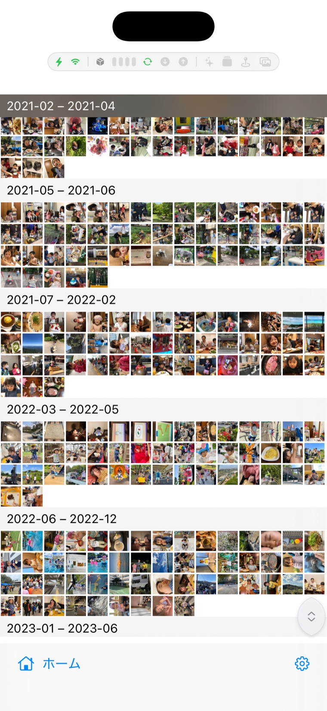
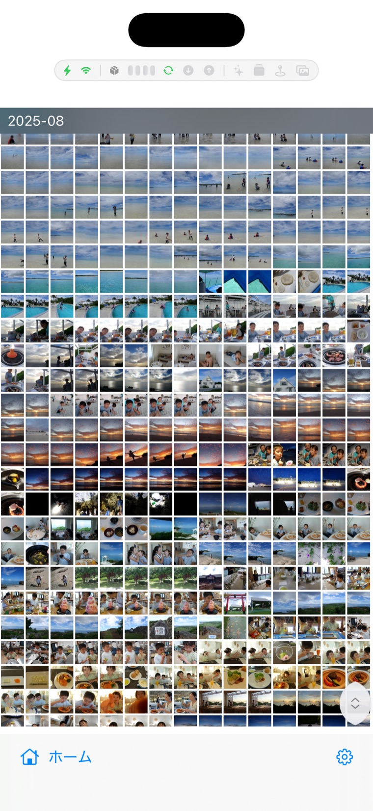
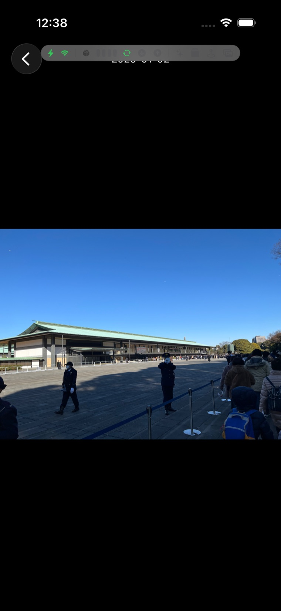
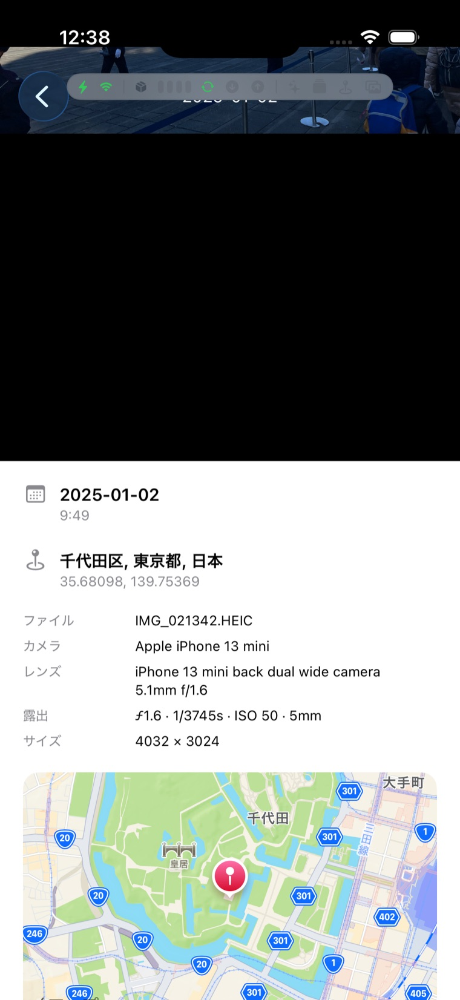

MosaicPhotos ヘルプ / はじめに・基本の見かた
はじめに・基本の見かた
端末内の写真と Dropbox の写真を、ひとつの画面でまとめて見られます。最初に押さえておくと便利な操作をまとめました。
ホーム画面

ホームは大きく次のブロックに分かれます。
- ソース：すべての写真（端末＋Dropbox を統合）／端末の写真／クラウド（Dropbox）。
- 時間と場所：撮影日時・場所から旅行を自動でアルバム化。
- AI アルバム：言葉で作ったアルバム（次項）。
- アルバム：Dropbox のフォルダ名から作るアルバム（フォルダアルバム）と端末アルバム。
右下の歯車から設定を開けます。
グリッドの見かた（ズーム・月グループ）

写真一覧はピンチで大きさ（1 画面に並ぶ枚数）を変えられます。表示は dense（連続）／月／年の 3 段階。
月表示では、写真の少ない月をまとめて範囲ヘッダー（例「2021-02 – 2021-04」）の下に密に詰めて表示します。詰め具合は 設定 → Photo Grid で変えられます。

たくさん並べるとサムネイルが小さくなり、ざっと見渡せます。右端のバーを使うと素早くスクロールできます。
1 枚を開く・写真情報

写真をタップすると全画面で表示。左右にスワイプして次の写真へ。

情報パネルでは、日付・場所（地図）・EXIF（カメラ／レンズ／露出／サイズ）と、オンデバイス AI によるキーワードタグを確認できます。
クラウド（Dropbox）

Dropbox を接続すると、クラウド上の写真も同じグリッドで閲覧できます。一覧は差分同期で最新に保たれ、サムネイル・本体画像はローカルにキャッシュされます。接続は 設定 → Dropbox から。